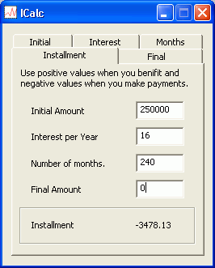

[Home]
ICalc (Interest Calculator)
(Last updated 2005-03-21 Open sourced)
What is ICalc
ICalc is a compounded interest calculator that can calculate any component of the compounded interest calculation.
Screen Shot

Why this calculator, when so many others exist?
I am learning WTL which is an extention to ATL. As a learning exercise I decided to make something usefull.
Features
- Can be used to calculate loan data aswell as investment data.
- Calculates: Initial Amount - this is the amount you want to loan or the lump sum you have to invest.
- Calculates: Final Amount - this is the amount you owe or receive after your investment matures
- Calculates: Monthly Installment - this is the amount you must pay per month or the monthly return on your investment
- Calculates: Number of Months (Negative months were not tested, but it should work, should you be that weird!)
- Calculates: Interest per Year - due to the polynomial nature of the Interest formula some weird (typically negative interest rates) combinations may fail!
- Very small about 100KB
- Stand alone, no need for any other system files.
- Works on Windoze 95, 98, NT, and XP needs a minimum of Internet Explorer 3
- No splash screens, irritation screens, adverts or reminders.
- Does not write to the registry
- And the best of all it's free! Now under the open source GPL license
Download Icalc ICalc.exe (114,688 bytes)
Download Icalc source ICalcSrc.zip (31,422 bytes)
Send your patches and comments to William.Bell@frog.za.net